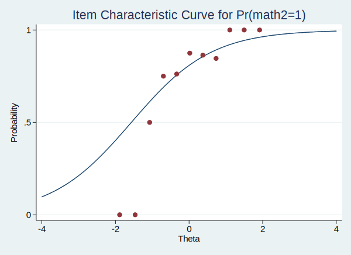

上一篇文章我们介绍了如何使用clogit命令估计题目的难度参数, 从这篇文章开始我们主要是介绍一下stata进行项目反应分析的原理。下面我们开始使用stata本身就支持的irt命令, 用更好的工具进行项目特征的分析。
加载数据
我们仍然使用上一篇的数据, 可以直接从网络中加载数据:
1 | use http://www.stata.com/support/faqs/dta/raschfaq, clear |
这个数据是有10题目, 120个学生作答，编码为1（正确）和0（不正确）。我们想知道10个题目的难度和120个学生的能力值。
下面加载我们列出数据的前几行看看数据的结构:
1 | list in 1/10 |
+-----------------------------------------------------------------------------------------------------------------------------+ | math1 math2 math3 math4 math5 math6 math7 math8 math9 math10 subj_id | |-----------------------------------------------------------------------------------------------------------------------------| 1. | correct correct correct incorrect incorrect incorrect incorrect incorrect incorrect incorrect 1 | 2. | correct correct incorrect incorrect correct correct correct incorrect incorrect incorrect 2 | 3. | correct correct incorrect incorrect correct incorrect incorrect incorrect incorrect incorrect 3 | 4. | correct correct correct incorrect correct incorrect correct incorrect incorrect incorrect 4 | 5. | correct correct correct incorrect incorrect correct correct correct incorrect incorrect 5 | |-----------------------------------------------------------------------------------------------------------------------------| 6. | correct correct correct incorrect correct incorrect incorrect correct correct incorrect 6 | 7. | correct correct correct incorrect incorrect correct incorrect incorrect incorrect incorrect 7 | 8. | correct correct correct incorrect correct correct incorrect correct correct correct 8 | 9. | correct correct correct incorrect correct correct correct incorrect correct incorrect 9 | 10. | correct correct correct correct correct incorrect incorrect correct correct incorrect 10 | +-----------------------------------------------------------------------------------------------------------------------------+
变量math1-math10是10道题目的得分, 他们显示成了文本”incorrect”和”correct”, 这只是分数的标签, 实际上他们存储的是0和1。最后一列是被试的id。
拟合模型
我们使用irt 1pl命令进行单参数logit模型的拟合, 后的变量制定了10个math变量。
1 | irt 1pl math1-math10 |
Fitting fixed-effects model: Iteration 0: log likelihood = -724.16318 Iteration 1: log likelihood = -723.35014 Iteration 2: log likelihood = -723.34959 Iteration 3: log likelihood = -723.34959 Fitting full model: Iteration 0: log likelihood = -705.13593 Iteration 1: log likelihood = -695.54708 Iteration 2: log likelihood = -695.52399 Iteration 3: log likelihood = -695.52398 One-parameter logistic model Number of obs = 120 Log likelihood = -695.52398 ------------------------------------------------------------------------------ | Coef. Std. Err. z P>|z| [95% Conf. Interval] -------------+---------------------------------------------------------------- Discrim | .9176656 .1159959 7.91 0.000 .6903179 1.145013 -------------+---------------------------------------------------------------- math1 | Diff | -1.818811 .3417085 -5.32 0.000 -2.488548 -1.149075 -------------+---------------------------------------------------------------- math2 | Diff | -1.56836 .3161411 -4.96 0.000 -2.187985 -.9487346 -------------+---------------------------------------------------------------- math3 | Diff | -.9815245 .2683143 -3.66 0.000 -1.507411 -.4556381 -------------+---------------------------------------------------------------- math4 | Diff | -.2567456 .2369981 -1.08 0.279 -.7212534 .2077622 -------------+---------------------------------------------------------------- math5 | Diff | -.170697 .2356485 -0.72 0.469 -.6325597 .2911656 -------------+---------------------------------------------------------------- math6 | Diff | .257779 .2369481 1.09 0.277 -.2066307 .7221887 -------------+---------------------------------------------------------------- math7 | Diff | .3878777 .2399687 1.62 0.106 -.0824523 .8582077 -------------+---------------------------------------------------------------- math8 | Diff | 1.081058 .2749384 3.93 0.000 .5421885 1.619927 -------------+---------------------------------------------------------------- math9 | Diff | 1.341659 .2953618 4.54 0.000 .7627609 1.920558 -------------+---------------------------------------------------------------- math10 | Diff | 2.027436 .3650985 5.55 0.000 1.311856 2.743016 ------------------------------------------------------------------------------
对于单参数模型, 由于区分度参数对于所有项目都是相同的，因此仅列出一次。估计
0.92表示区分度较差; 也就是说，在给定的难度估计附近，任何两个
具有不同能力的学生将具有类似的预测成功概率。如果项目具有较好的区分度，则计算出的概率为
彼此相距甚远。
难度参数的估计对应于能力等级上Pr（Y = 1 |θ）= 0.5的点
。因为我们假设θ为零均值，所以如果题目难度分数为负数, 则相对容易
如果难度估计为正，则题目的难度相对较难。
在下文中，我们使用estat report命令来重新显示估计的IRT参数和
输出报告。我们使用byparm选项，它通过参数排列输出结果,
而不是按项目，使用sort（b）选项，它以升序显示题目难度。这使得很容易看到math1最简单，而math10最难。
1 | estat report, byparm sort(b) |
One-parameter logistic model Number of obs = 120 Log likelihood = -695.52398 ------------------------------------------------------------------------------ | Coef. Std. Err. z P>|z| [95% Conf. Interval] -------------+---------------------------------------------------------------- Discrim | .9176656 .1159959 7.91 0.000 .6903179 1.145013 -------------+---------------------------------------------------------------- Diff | math1 | -1.818811 .3417085 -5.32 0.000 -2.488548 -1.149075 math2 | -1.56836 .3161411 -4.96 0.000 -2.187985 -.9487346 math3 | -.9815245 .2683143 -3.66 0.000 -1.507411 -.4556381 math4 | -.2567456 .2369981 -1.08 0.279 -.7212534 .2077622 math5 | -.170697 .2356485 -0.72 0.469 -.6325597 .2911656 math6 | .257779 .2369481 1.09 0.277 -.2066307 .7221887 math7 | .3878777 .2399687 1.62 0.106 -.0824523 .8582077 math8 | 1.081058 .2749384 3.93 0.000 .5421885 1.619927 math9 | 1.341659 .2953618 4.54 0.000 .7627609 1.920558 math10 | 2.027436 .3650985 5.55 0.000 1.311856 2.743016 ------------------------------------------------------------------------------
下面我们绘制ICC曲线。ICC曲线横坐标是能力, 纵坐标是回答正确的概率, 而不同颜色的曲线代表不同的题目。下面, 我们使用irtgraph icc来绘制ICC曲线。blocation参数用于显示50%正确率对应的能力值(也就是难度), legend用来控制图例,
1 | irtgraph icc, blocation |
测验特征曲线TCC使用估计的1PL参数将试卷平均得分绘制为$\theta$的函数。我们用irtgraph tcc绘制TCC。对于10个二分得分题，很明显总得分范围从0到10.thetalines 选项在指定的$\theta$
1 | irtgraph tcc, thetalines(-1.96 0 1.96) |
这个图告诉我们对不同能力水平的人有什么样的试卷分数。
例如，我们可以预期高于平均水平的人得分4.94或以上。
使用标准正态分布（-1.96和1.96）的95％临界值，该图
还告诉我们，我们可以预期95％的随机选择的人得分在1.85和8.08分之间。
同样，更现实的说法是，我们预计大约95％的随机选择的人得分
在2到8之间。
irtgraph iif可以绘制每个题目的信息函数（IIF）。
信息函数可作为描述、挑选测验试题、以及比对测验的相对效能的实用方法，且作为建立、分析与诊断测验的参考依据。 试题信息函数定义如下：
$I_i$: 能力θ在试题i的试题信息$P_i$: 能力θ在试题i的答对几率$Q_i$: 能力θ在试题i的答错几率$P'_i$
1 | irtgraph iif |
测试信息函数:
1 | irtgraph tif |
我们还有一个常用的功能就是需要估计每个学生的能力值, 用下面的命令:
1 | predict Theta, latent |
(option ebmeans assumed) (using 7 quadrature points)
可以看一下Theta的基本情况:
1 | codebook Theta |
--------------------------------------------------------------------------------------------------------------------------------------------------------------------------------------------------------------------------------------------------------------- Theta empirical Bayes means for Theta --------------------------------------------------------------------------------------------------------------------------------------------------------------------------------------------------------------------------------------------------------------- type: numeric (float) range: [-1.8855176,1.9160916] units: 1.000e-09 unique values: 11 missing .: 0/120 mean: 5.9e-08 std. dev: .777321 percentiles: 10% 25% 50% 75% 90% -.884093 -.335998 .01916 .37397 .920238
用能力值, 我们可以将每一个题目的正确率和学生的能力值会知道icc图上, 方便比较模型拟合情况与实际得分情况的对比:
下面我们以Theta作为分组变量, 然后求取所有题目的平均分:
1 | collapse math*, by(Theta) |
看一下目前的数据基本情况:
1 | list |
+-------------------------------------------------------------------------------------------------------------------------+ | Theta math1 math2 math3 math4 math5 math6 math7 math8 math9 math10 | |-------------------------------------------------------------------------------------------------------------------------| 1. | -1.885518 0 0 0 0 0 0 0 0 0 0 | 2. | -1.464075 1 0 0 0 0 0 0 0 0 0 | 3. | -1.070907 0 .5 .75 .5 .25 0 0 0 0 0 | 4. | -.6972789 .75 .75 .3125 .25 .1875 .25 .1875 .0625 .125 .125 | 5. | -.3359977 .7619048 .7619048 .6666667 .4761905 .4285714 .4761905 .2380952 .047619 .047619 .0952381 | |-------------------------------------------------------------------------------------------------------------------------| 6. | .0191601 .8333333 .875 .625 .625 .7083333 .375 .5 .1666667 .2083333 .0833333 | 7. | .3739702 .8636364 .8636364 .9545454 .6818182 .5454546 .4545455 .5 .3636364 .3636364 .4090909 | 8. | .7342338 1 .8461539 .9230769 .6923077 .7692308 .7692308 .6923077 .7692308 .3846154 .1538462 | 9. | 1.106242 1 1 1 .75 1 .75 .75 1 .5 .25 | 10. | 1.497267 1 1 1 1 1 1 1 1 1 0 | |-------------------------------------------------------------------------------------------------------------------------| 11. | 1.916092 1 1 1 1 1 1 1 1 1 1 | +-------------------------------------------------------------------------------------------------------------------------+
我们可以把第一题math1的icc和能力与平均分绘制道图上:
1 | irtgraph icc math1, addplot(scatter math1 Theta) |
从上图中可以看出, 我们模型的拟合情况不太好, 尤其是低能力端, 点离曲线很远。
下面再看第二道题:
1 | irtgraph icc math2, addplot(scatter math2 Theta) |
(note: file C:/Users/syd/.stata_kernel_cache/graph7.svg not found)

总结
Stata官方支持的进行IRT分析的工具就这些了, 再多就是更多的模型了, 而缺少一些基本的模型拟合指标和其他一些高级的分析工具, 不过下一篇文章我们测试一下raschtest模块, 这是一个第三方模块, 可以补充一些缺失的功能。
注意
本文由jupyter notebook转换而来, 您可以在这里下载notebook
有问题可以直接在下方留言
或者给我发邮件675495787[at]qq.com
请记住我的网址: mlln.cn 或者 jupyter.cn